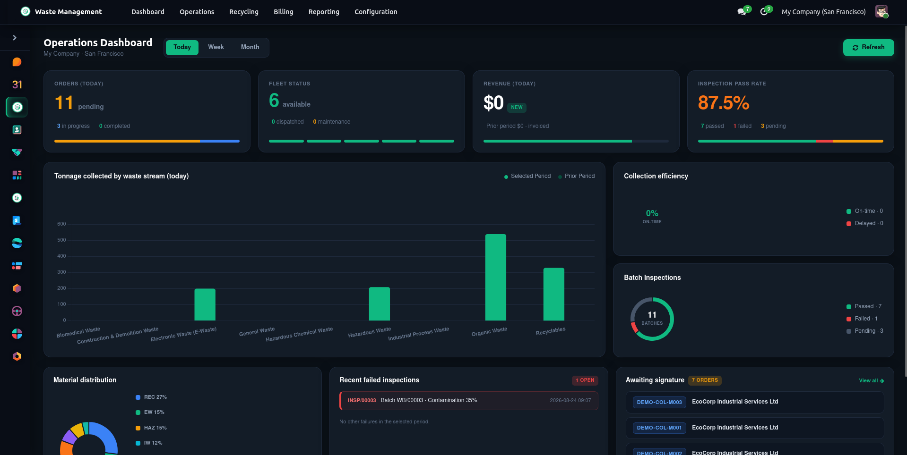
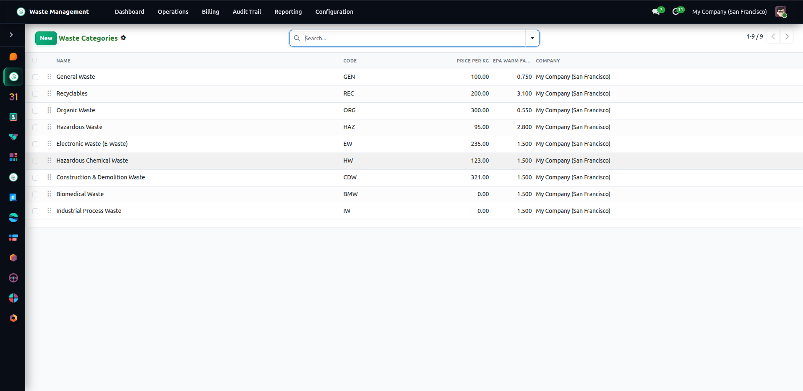
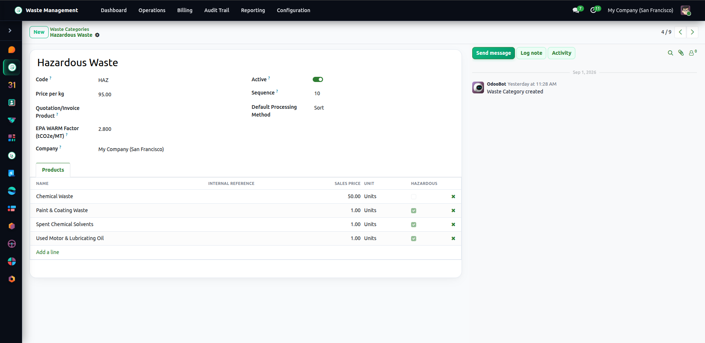
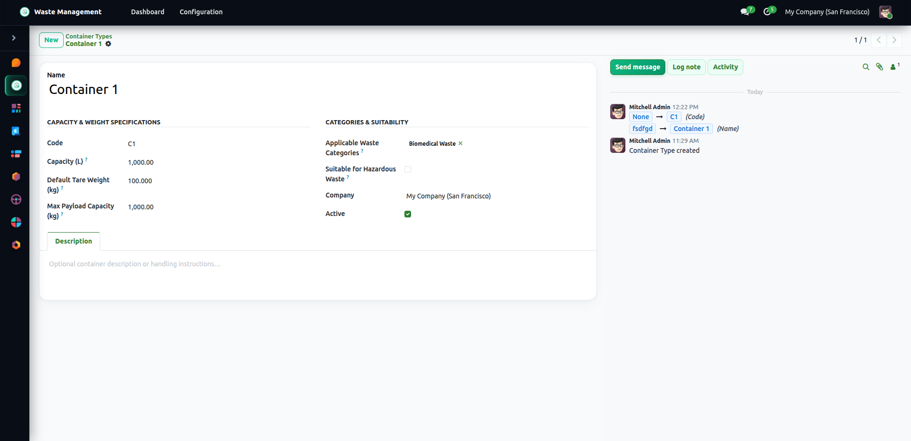
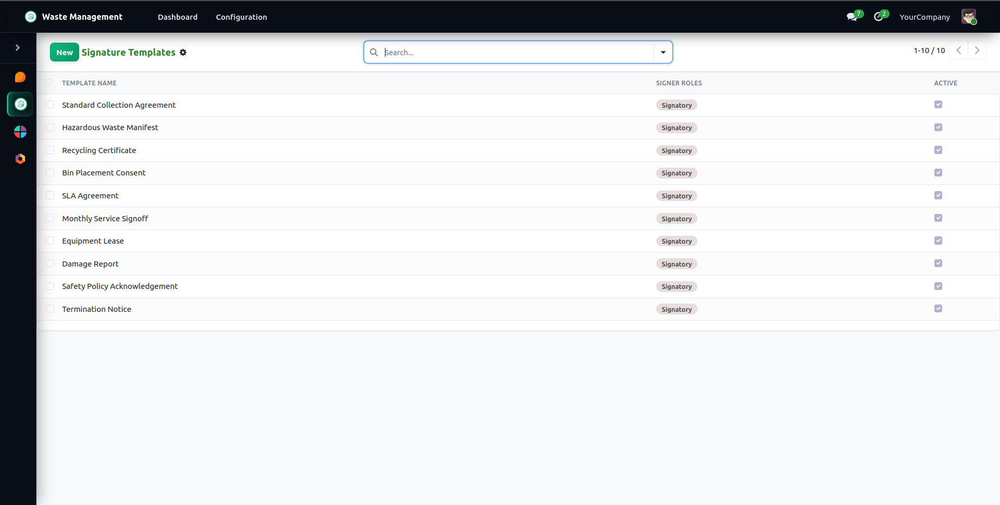
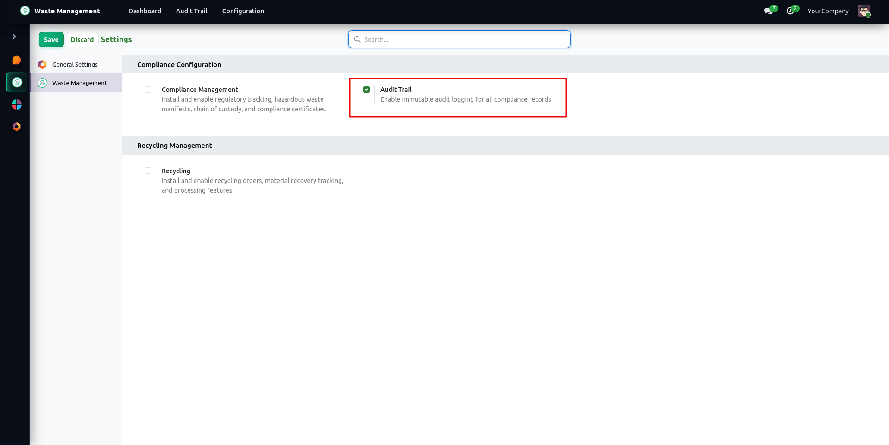
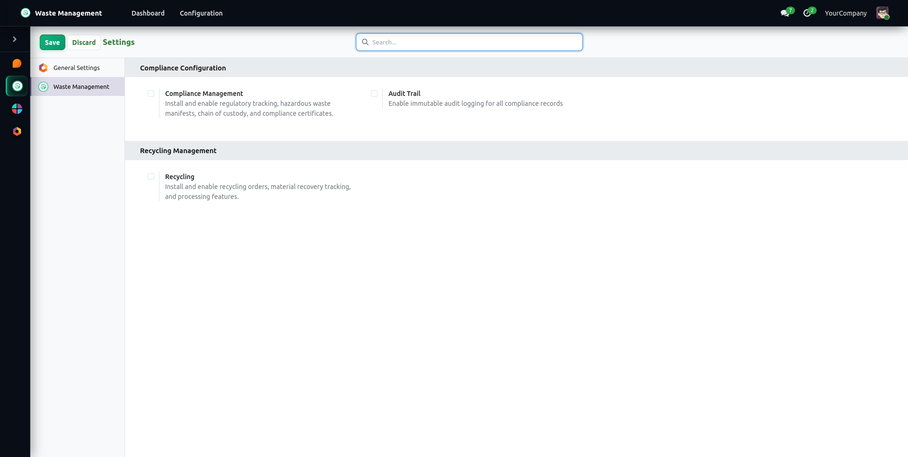

Odoo 19 · Waste Management Base
Waste Management Base: Master Data, Digital Signatures & Compliance Audit Framework
The foundational architecture for modern waste management operations — unifying multi-category stream classifications, container asset parameters, regulatory compliance codes, multi-party electronic signatures, and immutable field-level audit trails in Odoo 19.
Core Capabilities
Purpose-Built Master Data & Digital Governance
Core configurations, regulatory classifications, and cryptographically verified digital signatures powering waste operations.
Category-Based Waste Tracking
Classify hazardous, bio-medical, e-waste, recyclable, and organic streams with physical state attributes, density (kg/m³), and safety guidelines.
Waste Materials & Carbon Factors
Catalog specific waste materials with hazard severity levels, target recovery rates, and EPA WARM carbon offset coefficients.
Container Types & Tare Weights
Define standardized bins, dumpsters, roll-offs, and drums with volumetric capacities (m³ / L), tare deductions, and payload ratings.
Regulatory Compliance Codes
Centralized compliance registry supporting EPA Hazardous Waste, European Waste Catalogue (EWC), and Basel Convention codes.
Multi-Role Digital Signatures
Configurable signature templates supporting sequential signers (Generator, Transporter, Facility), cryptographic tokens, and PDF attachments.
Sign Now & Portal E-Sign
Execute in-app signatures with instant modal canvas or deliver secure, token-authenticated signature links to external customer portals.
Field-Level Audit Trail
Automated mutation tracking recording old vs. new values, user attribution, and lifecycle state transition durations for regulatory compliance.
Operations Overview Dashboard
Central OWL command console tracking real-time route progress (Pending, In Progress, Completed), daily collected tonnage by category, fleet vehicle availability, inspection pass rates, and collection revenue.
Operations Command & Overview Dashboard
Real-time visibility into collection routes (pending, in progress, completed), daily collected stream tonnage, category breakdown donut charts, active fleet vehicle statuses, inspection pass/fail rates, and revenue performance.

Waste Categories Master Data & Classification
Configure multi-category stream classifications with physical states (Solid, Liquid, Gas, Sludge), density parameters, default billing rules, safety handling instructions, and chatter tracking.

Waste Materials Catalog & Environmental Attributes
Catalog specific recyclable and hazardous waste materials with parent category linkages, hazard severity ratings, target recovery percentages, and EPA carbon offset coefficients.

Container Types & Volumetric Specifications
Manage container assets with volumetric capacity (m³ / Liters), tare weight deductions, maximum payload ratings, and material hazard compatibility constraints.

Digital Signature Template & Multi-Role Builder
Design multi-party electronic signature workflows across Generator, Transporter, Facility Manager, and Auditor roles with token expiration and PDF report bindings.

Immutable Field-Level Audit Trail & State Transitions
Comprehensive audit logging recording field-level modifications (Old Value → New Value), responsible user, timestamps, and model state duration history.

Waste Management Base Configuration Settings
Centralized configuration panel managing default units of measure, signature sequence formats, and strict audit logging compliance policies.

Features
Centralized Master Data Registry
Unified database for waste categories, raw materials, container specifications, and regulatory compliance codes.
Multi-Role Digital Signatures
Build signature templates with sequential signers, cryptographic verification tokens, and public portal signing links.
Field-Level Audit Logging
Automated capture of before and after field values across core models with user attribution and ISO timestamps.
Lifecycle State Transition History
Track stage progress, user triggers, and duration spent in each workflow state for complete operational visibility.
Environmental & Hazard Parameters
Embed hazard severity levels, safety handling guidelines, target recovery yields, and EPA WARM carbon offset coefficients.
Container Tare & Payload Standards
Standardized volumetric capacity and tare weights enabling automated on-site net weight calculations in downstream modules.
Regulatory Code Classifications
Pre-configured and customizable EPA, EWC, and Basel Convention codes with regulatory body governance.
Base Operations Overview Dashboard
OWL-powered central console displaying real-time master data metrics, e-signature status, and system audit history.
Frequent questions
What is the role of the Waste Management Base module?
Can wm_base be installed as a standalone module?
How does the digital signature engine work?
Does the audit trail impact system performance?
Release notes
Latest release
Related modules
More from Cybrosys


Professional support
Our expert services
Talk to us about your waste operation
Tell us how you collect, process, and bill today - we'll show you the suite running on that workflow.